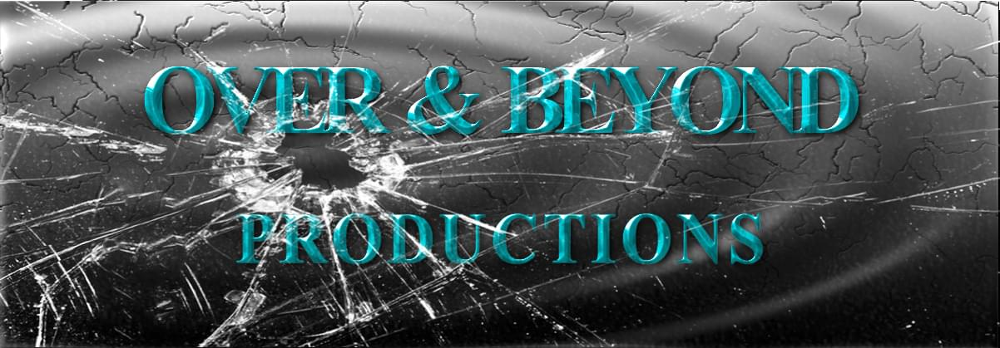

About Over and Beyond Productions
Millions everyday are realizing that the producers of the Over and Beyond team are the premier beatmakers of tomorrow. Our "set the bar higher" approach to beatmaking will give any aspiring or professional artist the motivation that he/she needs to crank out hit after hit. We will not stop making the best and most beneficial beats on the web ... ever!